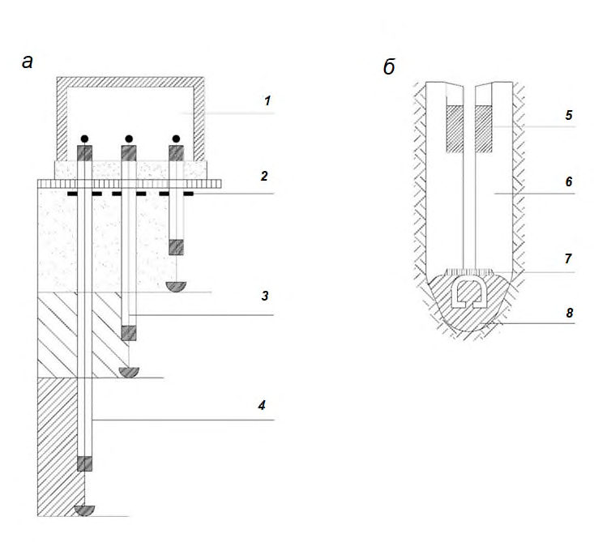
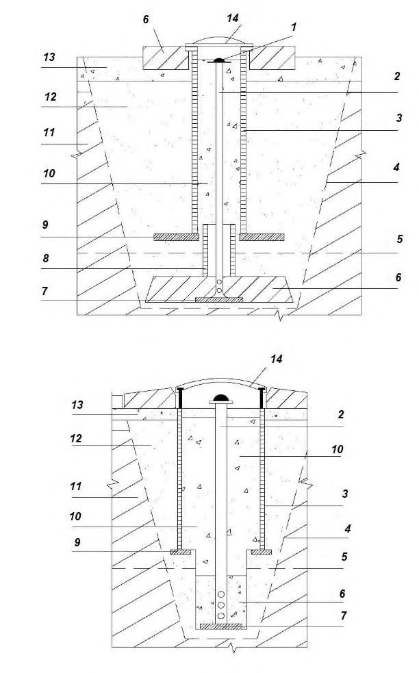
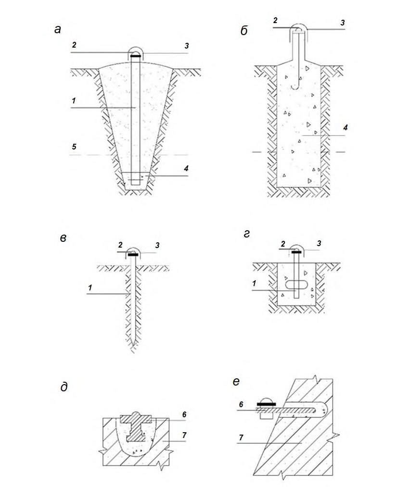

СП 420.1325800.2018 «Инженерные изыскания для строительства в районах развития о»
О документе: разработчики, утверждение, регистрация, ключевые слова
СВОД ПРАВИЛ
СП 420.1325800.2018
Издание официальное
Москва 2018
Отформатировано: По левому краю
отформатировано: русский
- 1 ИСПОЛНИТЕЛЬ -Общество с ограниченной ответственностью «Институт геотехники и инженерных изысканий в строительстве» (ООО «ИГИИС»)
- 2 ВНЕСЕН Техническим комитетом по стандартизации ТК 465 «Строительство»
- 3 ПОДГОТОВЛЕН к утверждению Департаментом градостроительной деятельности и архитектуры Министерства строительства и жилищнокоммунального хозяйства Российской Федерации (Минстрой России)
- 4 УТВЕРЖДЕН приказом Министерства строительства и жилищнокоммунального хозяйства Российской Федерации от 21 декабря 2018 г. № 844/пр и введен в действие с 22 июня 2019 г.
- 5 ЗАРЕГИСТРИРОВАН Федеральным агентством по техническому регулированию и метрологии (Росстандарт)
В случае пересмотра (замены) или отмены настоящего свода правил соответствующее уведомление будет опубликовано в установленном порядке. Соответствующая информация, уведомление и тексты размещаются также в информационной системе общего пользования - на официальном сайте разработчика (Минстрой России) в сети Интернет
© Минстрой России, 2018
Настоящий нормативный документ не может быть полностью или частично воспроизведен, тиражирован и распространен в качестве официального издания на территории Российской Федерации без разрешения Минстроя России
Дата введения - 2019-06-22
УДК ОКС 91.040.01
Ключевые слова: оползни, инженерные изыскания для строительства, оползневые процессы и явления, оползневая опасность, оползневые трещины, стадии оползневого процесса, методы исследования оползней, расчет устойчивости склонов
ИСПОЛНИТЕЛЬ
АО «НИЦ «Строительство»
Руководитель
разработки
Генеральный директор
\_\_\_\_\_\_\_\_\_\_\_\_\_\_\_
А.В. Кузьмин
Соисполнитель
ООО «ИГИИС»
Руководитель
разработки
Генеральный директор
\_\_\_\_\_\_\_\_\_\_\_\_\_\_\_
М.И. Богданов
Ответственный
исполнитель
Главный специалист
\_\_\_\_\_\_\_\_\_\_\_\_\_\_\_
В.А. Елкин
Введение
6 ВВЕДЕН ВПЕРВЫЕ
Настоящий свод правил разработан с целью реализации основных положений Федеральных законов от 29 декабря 2004 г. № 190-ФЗ «Градостроительный кодекс Российской Федерации», от 30 декабря 2009 г. № 384-ФЗ «Технический регламент о безопасности зданий и сооружений», от 27 декабря 2002 г. № 184-ФЗ «О техническом регулировании».
При разработке учтены требования постановления Правительства Российской Федерации от 19 января 2006 г. № 20 «Об инженерных изысканиях для подготовки проектной документации, строительства, реконструкции объектов капитального строительства» и постановления Правительства Российской Федерации от 16 февраля 2008 г. № 87 «О составе разделов проектной документации и требованиях к их содержанию».
Свод правил по инженерным изысканиям для строительства в районах развития оползневых процессов, разработан в развитие обязательных положений и требований СП 47.13330.2016 «Инженерные изыскания для строительства. Основные положения», требований СП 317.1325800.2017 «Инженерно-геодезические изыскания для строительства. Общие правила производства работ» и других нормативных документов, регламентирующих общие правила производства работ.
Свод правил подготовлен ООО «ИГИИС» (руководитель работы - канд. геол.-минерал. наук М.И. Богданов , ответственный исполнитель - канд. геол.-минерал. наук В.А. Елкин , исполнители Г.В. Мисник , Е.В. Леденева, С.А. Гурова, Н.П. Иевлева ); д-р техн. наук С.И. Маций ; д-р геол.-минерал. наук И.К. Фоменко ; д-р геол.-минерал. наук Е.В. Безуглова ; канд. геол.-минерал. наук А.Л. Стром .
1Область применения
Настоящий свод правил устанавливает общие требования при выполнении инженерных изысканий в районах возможного развития и активизации (далее - районов развития) оползневых процессов для подготовки документов территориального планирования, документации по планировке территории и выбору площадок (трасс) строительства, при подготовке проектной документации объектов капитального строительства, строительстве, эксплуатации и реконструкции зданий и сооружений.
Настоящий свод правил не распространяется на выполнение инженерных изысканий в районах возможного развития подводных оползневых процессов.
2Нормативные ссылки
- В настоящем своде правил использованы ссылки на следующие нормативные документы:
ГОСТ 5686-2012 Грунты. Методы полевых испытаний сваями
ГОСТ 12071-2014 Грунты. Отбор, упаковка, транспортирование и хранение образцов
ГОСТ 12248-2010 Грунты. Методы лабораторного определения характеристик прочности и деформируемости
- ГОСТ 19912-2012 Грунты. Методы полевых испытаний статическим и динамическим зондированием
ГОСТ 20276-2012 Грунты. Методы полевого определения характеристик прочности и деформируемости
ГОСТ 20522-2012 Грунты. Методы статистической обработки результатов испытаний
Общие требования
Engineering surveys for construction in the areas of development of landslide processes. General requirements
СП 420.1325800.2018
Добавлено примечание ([Н.П.2]): тире
ГОСТ 21830-76 Приборы геодезические. Термины и определения
- ГОСТ 22268-76 Геодезия. Термины и определения
- ГОСТ 23278-2014 Грунты. Методы полевых испытаний проницаемости
- ГОСТ 24846-2012 Грунты. Методы измерения деформаций оснований зданий и сооружений
- ГОСТ 25100-2011 Грунты. Классификация
ГОСТ 30416-2012 Грунты. Лабораторные испытания. Общие положения
- ГОСТ 30672-2012 Грунты. Полевые испытания. Общие положения
ГОСТ 31861-2012 Вода. Общие требования к отбору проб
ГОСТ Р 21.1101-2013 Система проектной документации для строительства. Основные требования к проектной и рабочей документации
ГОСТ Р 56353-2015 Грунты. Методы лабораторного определения динамических свойств дисперсных грунтов
СП 14.13330.2018 «СНиП II-7-81* Строительство в сейсмических районах» СП 47.13330.201816 «СНиП 11-02-96 Инженерные изыскания для строительства.
Основные положения»
СП 115.13330.2016 «СНиП 22-01-95 Геофизика опасных природных воздействий»
СП 317.1325800.2017 Инженерно-геодезические
Общие правила производства работ
Примечание - При пользовании настоящим сводом правил целесообразно проверить действие ссылочных документов в информационной системе общего пользования -на официальном сайте федерального органа исполнительной власти в сфере стандартизации в сети Интернет или по ежегодному информационному указателю «Национальные стандарты», который опубликован по состоянию на 1 января текущего года, и по выпускам ежемесячного информационного указателя «Национальные стандарты» за текущий год. Если заменен ссылочный документ, на который дана недатированная ссылка, то рекомендуется использовать действующую версию этого документа с учетом всех внесенных в данную версию изменений. Если заменен ссылочный документ, на который дана датированная ссылка, то рекомендуется использовать версию этого документа с указанным выше годом утверждения (принятия). Если после утверждения настоящего свода правил в ссылочный документ, на который дана датированная ссылка, внесено изменение, затрагивающее положение, на которое дана ссылка, то это положение рекомендуется применять без учета данного изменения. Если ссылочный документ отменен без замены, то положение, в котором дана ссылка на него, рекомендуется применять в части, не затрагивающей эту ссылку. Сведения о действии сводов правил целесообразно проверить в Федеральном информационном фонде стандартов.
3Термины и определения
В настоящем своде правил применены термины по ГОСТ 21830, ГОСТ 22268, [1], [2], а также следующие термины с соответствующими определениями.
- 3.1деформационный знак
- Геодезический знак, установленный на наблюдаемом объекте, меняющий свое плановое и/или высотное положение вследствие развития деформаций. изыскания для строительства.
- Добавлено примечание ([Н.П.3])
- ОШИБКА СП 47.13330.20 16 Источник: сайт «Стандартинформ»
- 3.2оползневой процесс
- Смещение вниз по склону некоторого объема грунтовых масс под действием гравитационных сил без потери контакта с подстилающей толщей.
- 3.3оползневая опасность
- Вероятность развития и/или активизации оползневого процесса с определенными характеристиками (тип, объем, скорость, размеры угрожаемой территории), негативные последствия которого могут нанести вред жизни и здоровью людей, причинить ущерб проектируемым и существующим зданиям и сооружениям, окружающей среде.
- 3.4оползнеопасный склон
- Склон, на котором возможно развитие оползневых процессов при воздействии природных и (или) техногенных факторов.
- 3.5опорный знак
- Геодезический пункт, относительно которого определяются плановые смещения деформационных знаков.
- 3.6опорный репер
- Геодезический пункт, относительно которого определяются смещения деформационных знаков по высоте.
- 3.7основной деформирующийся горизонт ( ; ОДГ)
- Геологическое тело, деформации которого приводят к нарушению естественного залегания и деформациям всего комплекса геологических тел в пределах оползневой зоны.
- 3.8откос
- Вертикальный или наклонный участок поверхности земли, сформированный в результате инженерно-хозяйственной деятельности человека.
- 3.9устойчивость склона (откоса)
- Способность склона (откоса) сохранять структуру и строение в течение длительного времени.
4Общие требования
Добавлено примечание ([Н.П.4]): ОДГ - это сокращение, используется один раз в тексте
- данные о наблюдавшихся на исследуемой территории деформациях и аварийных ситуациях в процессе строительства и эксплуатации сооружений, связанных с развитием оползневых процессов;
- требования к прогнозу развития оползневых процессов (качественному или количественному);
- требования о предоставлении общих рекомендаций для разработки проектных решений по инженерной защите.
- предварительные гипотезы об условиях формирования и причинах развития оползневого процесса, о механизме смещения, стадии развития;
- сведения об известных проявлениях оползневых процессов и связанных с ними деформациях зданий и сооружений в исследуемом районе;
- сведения о ранее выполненных мероприятиях инженерной защиты и состоянии имеющихся защитных сооружений;
- обоснование необходимости проведения локального мониторинга территории инженерных изысканий.
Программа подлежит уточнению в процессе выполнения работ, в том числе после рекогносцировочного обследования и в случае изменения рабочей гипотезы об условиях образования оползней.
- получение количественных характеристик движения оползня для выявления роста или затухания оползневого процесса, его моделирования (или проверки ранее созданной модели) и прогнозирования, наполнения геоинформационных систем (ГИС);
- определение скоростей и направлений подвижек на разных глубинах оползня (по дополнительному требованию задания);
- получение данных, необходимых для разработки противооползневых мероприятий и определение их эффективности.
- сбор и анализ материалов инженерных изысканий прошлых лет, топографогеодезических, картографических, аэрофотосъемочных и других материалов и данных;
- рекогносцировочное обследование территории (площадки, участка), выявление признаков проявления оползневых процессов, нанесение их на существующие или вновь создаваемые инженерно-топографические планы (при необходимости);
- разработку в соответствии с заданием программы выполнения инженерногеодезических изысканий, содержащей обоснование состава, объемов, периодичности и продолжительности инженерно-геодезических изысканий на исследуемом участке, схем геодезических сетей, конструкций геодезических пунктов, методики измерений и обработки получаемых результатов и другую информацию согласно СП 47.13330.2016 (разделы 4, 5) и СП 317.1325800;
- закладку геодезических (опорных и деформационных) знаков, установку контрольно-измерительной аппаратуры (КИА), предусмотренной программой;
- метрологический контроль применяемых геодезических приборов;
- выполнение геодезических измерений;
- камеральную обработку результатов измерений (предварительную обработку, уравнивание, оценку точности), определение планово-высотных смещений геодезических знаков и/или изменений земной поверхности на участках развития оползневого процесса;
- создание инженерной цифровой модели местности (в случае, если выполнялась топографическая съемка);
- анализ количественных характеристик происходящих оползневых процессов (построение таблиц и графиков смещений, сравнение измеренных деформаций с прогнозными значениями);
- составление технического отчета о выполненных инженерно-геодезических изысканиях.
- создание планово-высотной геодезической сети специального назначения, включающей опорные и деформационные знаки;
- топографическая съемка в масштабах 1:5 000-1:200 [3] с фиксацией положения всех структурных элементов оползня (бровок срыва, головной части оползня, числа и расположения оползневых ступеней, языка оползня; измерение раскрытия выявленных трещин, определение наклона отдельных участков, где по результатам инженерногеологических изысканий может происходить вращательное движение отдельных блоков и др.);
- определение вертикальных и горизонтальных смещений точек на оползнеопасном склоне;
- наблюдения за деформациями зданий и сооружений (включая сооружения инженерной защиты), в том числе возводимых или реконструируемых на оползнеопасных склонах или находящихся в зоне их влияния.
где 𝑆мин - минимальное фиксируемое смещение деформационных знаков.
При равноточности измерений в сравниваемых циклах наблюдений, значение СКП определения планового или высотного положения деформационного пункта относительно опорных в одном цикле, как правило, не должно быть более рассчитанного по формуле
где 𝑚пункт - СКП определения смещения пункта в одном цикле.
- геодезические спутниковые определения;
- триангуляция, трилатерация, полигонометрия;
- линейно-угловые сети;
- прямые и обратные засечки.
- геометрическое нивелирование;
- тригонометрическое нивелирование;
- геодезические спутниковые определения (спутниковое нивелирование).
Выполнять работы следует согласно ГОСТ 24846, СП 317.1325800. Методики измерений приведены в [3]-[76].
- измерение превышений внутри куста реперов (в случае использования одного куста реперов);
- измерение превышений внутри каждого куста реперов и превышений между кустами (при использовании двух и более кустов реперов);
- сравнение превышений между реперами сети, уравненной как свободная (т.е. вычисленной относительно одного исходного репера), если опорные реперы территориально не объединены в кусты.
Добавлено примечание ([Н.П.5]): точка зависимости от глубины заложения, подразделяются на глубинные и поверхностные. Конструкция деформационных знаков устанавливается в программе в зависимости от целей и задач инженерных изысканий. В случае необходимости, в плановой деформационной сети дополнительно проектируется закладка рабочих пунктов вблизи исследуемого объекта наблюдений для выполнения с них непосредственных измерений смещений деформационных знаков. В высотной деформационной сети в качестве рабочих реперов, как правило, используются деформационные знаки.
- геодезических спутниковых определений [4], [5];
- створных наблюдений;
- триангуляции;
- трилатерации;
- полигонометрии;
- линейно-угловых измерений;
- отдельных направлений.
Методика выполнения измерений устанавливается в программе.
- геометрическим по ГОСТ 24846, [6];
- тригонометрическим по ГОСТ 24846;
- спутниковым (по дополнительному обоснованию в программе) [4], [5].
- тахеометрическим;
- наземным лазерным сканированием;
- воздушным лазерным сканированием;
- с использованием спутниковых технологий;
- стереофотограмметрическим.
- получение достоверных данных об инженерно-геологических условиях и техногенных воздействиях, прогнозе их изменения для территории района (площадки, участка, трассы) проектируемого строительства, необходимых и достаточных для осуществления градостроительной деятельности и разработки проектных решений;
- получение достоверных данных необходимых для разработки противооползневых мероприятий и проведения расчетов конструкций сооружений инженерной защиты объекта капитального строительства.
Добавлено примечание ([Н.П.6]): , запятая
(плотинах, дамбах, дорожных насыпях, берегах каналов и водохранилищ).
При инженерно-геологических изысканиях необходимо устанавливать типы и подтипы оползневых процессов (приложение Г) по механизму смещения пород, стадию оползневого процесса (приложение Д), а также давать характеристику пород основного деформируемого горизонта и описывать характер проявления процесса.
Категорию опасности оползневых процессов рекомендуется устанавливать в соответствии с таблицей 5.1 СП 115.13330.2016. При оценке повторяемости оползней следует указывать характер подвижек (постоянные или периодические).
Оползни подразделяются по глубине захвата пород оползневыми деформациями, объему смещаемого грунта и по скорости смещения в соответствии с таблицами 1, 2 и 3. Общее описание оползня следует приводить в соответствии с приложением Ж.
Таблица 1 Классификация оползней по глубине захвата пород оползневыми деформациями
| Наименование оползня по глубине | Глубина захвата пород оползневыми деформациями, м |
|---|---|
| Мелкий | < 5 |
| Глубокий | 5-20 |
| Очень глубокий | > 20 |
Таблица 2 Классификация оползней по объему
| Наименование оползня по объему | Объем, м³ |
|---|---|
| Очень малый | <100 |
| Малый | 100-1 000 |
| Небольшой | 1 001-10 000 |
| Средний | 10 001-100 000 |
| Крупный | 100 001-1 000 000 |
| Очень крупный | 1 000 001-10 000 000 |
| Грандиозный | > 10 000 000 |
Таблица 3 Классификация оползней по скорости оползневых процессов
| Наименование оползня по скорости смещения | Типичная скорость |
|---|---|
| Экстремально медленный | Менее 16 мм/г |
| Очень медленный | 16 мм/г - 1,6 м/г |
| Медленный | 1,6 м/г - 13 м/мес |
| Умеренный | 13 м/мес - 1,8 м/ч |
| Быстрый | 1,8 м/ч - 3 м/мин |
| Очень быстрый | 3 м/мин-5 м/с |
| Экстремально быстрый | Более 5 м/с |
В районах развития оползневых (оползнеопасных) склонов и откосов, сложенных скальными и полускальными грунтами должны изучаться: крутизна и высота склона, блочность пород, пространственное соотношение трещиноватости и зон ослаблений с пространственной ориентацией склона (откоса), тип и характер заполнителя трещин.
- условий возникновения оползневых процессов, в том числе их приуроченности к определенным геологическим образованиям, тектоническим структурам и геоморфологическим элементам;
- времени (возраста) возникновения оползневого процесса и стадии (фазы) его развития;
- факторов активизации оползневых процессов, включая влияние гидрогеологических, гидрологических и метеорологических условий; роли хозяйственной деятельности в активизации оползневых процессов; наличия других видов современных экзогенных геологических процессов (выветривание, эрозия, абразия) и определения степени их влияния на устойчивость склонов;
- характера деформаций дневной поверхности, возможной зоны поражения территории оползневым процессом, а также деформаций в имеющихся на склоне зданиях и сооружениях, состояния сооружений инженерной защиты и эффективности их работы.
В составе инженерно-геологических изысканий выполняются:
- сбор и обработка материалов изысканий и исследований прошлых лет;
- дешифрирование аэро- и космических материалов;
- рекогносцировочное обследование с маршрутными наблюдениями;
- инженерно-геологическая (оползневая) съемка;
- проходка инженерно-геологических выработок с их опробованием;
- геофизические исследования;
- полевые исследования грунтов;
- гидрогеологические исследования;
- лабораторные исследования проб подземных вод и грунтов;
- камеральная обработка материалов;
- сейсмическое микрорайонирование (при необходимости);
Добавлено примечание ([Н.П.7]): пробел неразрывный
- локальный мониторинг оползневых процессов;
- получение исходных данных для проведения качественной или количественной оценки возможного возникновения и развития оползневых процессов.
4.9.5 Сбору и обработке подлежат:
- материалы инженерно-геологических и гидрогеологических исследований прошлых лет для составления предварительной гипотезы об условиях образования оползней и причинах их возникновения;
- материалы государственных геолого-съемочных работ (геологические, гидрогеологические, тектонические и другие карты масштабов 1:1 000 000-1:200 000 и более крупные), материалы специального гидрогеологического и инженерногеологического картирования и других региональных исследований;
- аэро- и космические материалы;
- комплекты нормативных карт общего сейсмического районирования (ОСР);
- результаты научно-исследовательских работ (фондовых и опубликованных, при наличии ссылки на официальные источники), в которых обобщаются данные о природных условиях и техногенных воздействиях и/или приводятся результаты новых разработок по методике и технологии выполнения инженерно-геологических изысканий.
4.9.6 На основе собранных материалов:
- определяется степень изученности инженерно-геологических условий территории и оценивается возможность использования имеющихся материалов для решения соответствующих задач для различных видов градостроительной деятельности;
- производится предварительная классификация оползневых процессов по механизму смещения на изучаемой территории;
- составляются предварительные карты проявления оползневых процессов на исследуемой территории;
- изучаются причины возникновения аварийных ситуаций, вызванных активизацией оползневых процессов, в том числе неэффективности работы сооружений инженерной защиты;
- выполняется анализ опыта эксплуатации объектов капитального строительства и эффективности мероприятий инженерной защиты на участках с аналогичными инженерно-
Добавлено примечание ([Н.П.8]): пробел неразрывный геологическими условиями.
- наличия и распространения оползней, их границ;
- типов, видов, формы и масштабности проявления оползней;
- приуроченности оползней к определенным формам рельефа и геоморфологическим элементам;
- приблизительной оценки относительного возраста оползней (по геоморфологическим и геоботаническим признакам);
- стадии (фазы) развития оползней;
- природных факторов развития оползней;
- факторов техногенной нагрузки;
- наличия видимых деформаций поверхности земли, зданий и сооружений;
- границ распространения генетических типов четвертичных отложений;
- тектонических разрывных нарушений и ослабленных зон;
- областей питания и разгрузки подземных и поверхностных вод;
- границ различных ландшафтов;
- динамики развития оползней на основе сопоставления снимков и карт разных лет съемки.
Дешифрирование аэро- и космических материалов, аэровизуальные наблюдения, как правило, предшествуют инженерно-геологической съемке и другим наземным исследованиям при выполнении инженерных изысканий.
Добавлено примечание ([Н.П.9]): пробел неразрывный проектируемого строительства.
- определения генетических типов рельефа с приуроченными к ним оползнями различных типов;
- описания и оценки состояния поверхности склона и его характерных особенностей на оползневых участках в границах исследуемой территории, геоморфологических условий;
- измерений элементов залегания трещиноватости с выявлением опасных с точки зрения устойчивости склона (откоса) систем трещин в зонах развития коренных пород;
- выявления участков с оползнями различных типов (приложение Г), отличающихся по глубине захвата пород оползневыми деформациями (таблица 1), по объему и скорости смещения (таблицы 2, 3), находящихся на разных стадиях развития оползневого процесса (приложение Д);
- предварительной оценки масштабов оползневых деформаций, выявления активных зон развития деформаций на поверхности склона, а также базиса их смещения;
- установления пространственных закономерностей оползневых деформаций на склоне (границ активных оползней), выявления оползневых тел различного порядка;
- выявления и описания выходов подземных вод (родников, мочажин) и других водопроявлений, искусственных водных объектов, суффозионных процессов;
- выявления проявлений свежей эрозионной или абразионной подрезки склонов;
- установления особенностей хозяйственного использования территории, выявления техногенных воздействий;
- обследования и фотофиксации существующих деформаций и предварительной оценки технического состояния существующих зданий и сооружений в пределах оползня и смежных с ним участков, оценки эффективности существующей инженерной защиты;
- уточнения результатов предварительного дешифрирования аэро- и космических материалов;
- выявления оползней-аналогов на прилегающей территории (при необходимости).
При проведении оползневой съемки используются сведения, полученные при дешифрировании аэро- и космических материалов, а также данные, полученные при рекогносцировочном обследовании и маршрутных наблюдениях.
По результатам оползневой съемки составляют карту инженерно-геологических условий, с отображением элементов строения оползня, форм микрорельефа территории, отражающих развитие склоновых процессов, границ потенциально-неустойчивых (оползневых) участков и гидрогеологических условий.
Добавлено примечание ([Н.П.10]): цифра и знак должны располагаться вместе 85% по ГОСТ 1.5 -2001 в соответствии с ГОСТ 12071. Образцы пород для исследований следует отбирать с учетом ГОСТ 20522, для чего на этапе полевых работ необходимо выполнять предварительное инженерно-геологическое разделение грунтового массива на инженерно-геологические элементы. Монолиты для лабораторных исследований необходимо отбирать из каждого предварительно выделенного инженерно-геологического элемента и, по возможности, в разных частях оползня: головной, средней и языковой.
Отбор, консервацию, хранение и транспортирование проб воды для лабораторных исследований следует осуществлять в соответствии с ГОСТ 31861.
Для более достоверного выявления указанных характеристик проходку инженерногеологических скважин следует дополнять проходкой шурфов и (или) дудок.
Часть пройденных выработок может применяться в дальнейшем для ведения наблюдений за оползневыми подвижками и режимом подземных вод.
- получения информации о строении грунтового массива в пределах оползневого склона и обоснования выбора мест расположения инженерно-геологических выработок;
- определения фактических и потенциально возможных зон оползневого смещения, которые могут быть приурочены, в частности, к грунтам мягко- и текучепластичной консистенции;
- выделения зон разной степени выветрелости, трещиноватости и разуплотнения;
- определения мощности оползневых масс грунтов;
- изучения влажности грунтов по глубине и во времени, особенно при изучении вязкопластических оползней;
- определения границ обводненных зон в грунтовом массиве, изменений свойств грунтов вблизи зоны смещения;
- изучения динамики оползневых смещений;
- выявления мест утечки воды из подземных коммуникаций;
- выявления на склоне старых заброшенных и действующих дренажей, сетей подземных коммуникаций.
- электротомографию (ЭТ);
- вертикальное электрическое зондирование (ВЭЗ, по методу двух составляющих (ВЭЗ МДС));
- метод преломленных волн (МПВ);
- метод отраженных волн (МОВ);
- метод общей глубинной точки (МОГТ);
- метод поверхностных волн (MASW);
- метод естественных импульсов электромагнитного поля Земли;
- каротаж и георадиолокацию.
- определения деформационных характеристик грунтов с помощью испытаний статическими нагрузками - штампами, прессиометрами, дилатометрами;
- определения прочностных характеристик срезом целиков грунтов и (или) вращательным (поступательным) срезом;
- расчленения толщи грунтов в массиве на отдельные слои, оценки пространственной изменчивости свойств грунтов с помощью статического и динамического зондирования.
- оценки значений сезонных колебаний уровней подземных вод и гидродинамического давления по всем водоносным горизонтам, оказывающим воздействие на устойчивость рассматриваемого склона;
- выявления и установления характера взаимосвязей между режимом подземных вод и оползневыми процессами;
- установления источников питания подземных вод, в том числе техногенного происхождения (утечки производственно-хозяйственных вод, поливы);
- выявления водоносных горизонтов, играющих роль в оползневом процессе;
- установления взаимосвязи между водоносными горизонтами и поверхностными водами;
- определения положения уровней подземных вод в различное время года для расчетов гидростатического и гидродинамического давлений воды и их колебаний;
- построения гидрогеологической модели (по требованию заказчика и при соответствующем обосновании в программе).
Изыскания на оползневых склонах включают в себя следующие виды гидрогеологических исследований:
- рекогносцировочные обследования для выявления уровней скрытой и открытой разгрузки подземных вод (растительность, высачивание, заболачивание) и суффозионного выноса песчаного материала в промоинах, основании склона, под урезом реки или водохранилища;
- гидрогеологическое бурениебурение гидрогеологических скважин на склоне для выявления неравномерных фильтрационных потоков скрытой ярусной разгрузки водоносных горизонтов - главный гидродинамический фактор нарушения устойчивости (при соответствующем обосновании в программе);
- изучение гидрогеологических условий и гидрогеологическая стратификация массива горных пород в области питания водоносных горизонтов, разгружающихся на склоне;
- определение уровней грунтовых и межпластовых вод в предполагаемой области захвата массива горных пород оползневыми деформациями (в интервале разреза от бровки склона до днища долины);
- организация режимных наблюдений (при соответствующем обосновании в программе) за уровнями грунтовых вод по скважинам на бровке и нижней части склона и на водомерном посту в водоеме, в случае затопленного основания склона (при невозможности - обобщение данных по режимным пунктам-аналогам);
- выявление техногенных факторов, усиливающих влияние подземных вод на склон, водонесущих коммуникаций, гидротехнических сооружений, дренажей, строительного водопонижения, попусков водохранилищ, водозабор из скважин, неорганизованный сброс воды и поливы на рельеф;
- для затопленных склонов - определение режима подъема и спада уровня реки или водохранилища (по данным гидрометеорологических изысканий).;
- обоснование концепции силового воздействия подземных вод на устойчивость оползневого (оползнеопасного) склона.
Обязательному опробованию подлежат грунты в зоне поверхностей смещения, грунты ослабленных, перемятых, разуплотненных и водонасыщенных слоев, зон тектонических нарушений.
Добавлено примечание ([Н.П.11]): При определении гидрогеологических параметров водоносных горизонтов и грунтов на оползневых (оползнеопасных) склонах и откосах полевыми методами следует руководствоваться ГОСТ 23278. испытаниям должны учитывать предполагаемые воздействия различных факторов на исследуемый грунт: изменения его напряженного состояния и степени уплотнения при снятии нагрузки, обводнении, оползневых смещениях и других воздействиях.
- испытание образца грунта природного сложения и влажности - метод трехосного сжатия или одноплоскостного среза;
- сдвиг образца грунта по предварительно подготовленной (или существующей) поверхности (естественной влажности или дополнительно увлажненной) -сдвиг разрезанного образца по поверхности разреза или повторный сдвиг по поверхности ранее выполненного сдвига.
Примечание - При наличии требований в задании длительная прочность грунтов в зоне развития оползневых деформаций может определяться для прогноза развития оползневых процессов на период эксплуатации зданий и сооружений.
Определение значений реологических характеристик грунтов (порога ползучести, вязкости, длительной прочности) следует проводить методами параллельных испытаний серии образцов-близнецов при различных значениях постоянного сдвигающего напряжения (метод испытания на ползучесть с определением длительной прочности) или при различных скоростях приложения нагрузок (метод испытания на длительную прочность).
- историко-геологический (учет истории формирования склонов под воздействием различных оползнеобразующих и других факторов);
- сравнительно-геологический (использование природных аналогов для оценки возможности развития оползневых процессов на исследуемом склоне);
- метод оползневого потенциала (определение значений вероятности проявления оползней в зависимости от значений вероятностей воздействия факторов оползнеобразования);
- метод экспертных оценок.
При изучении оползневых процессов на больших территориях эффективно применение радарной спутниковой интерферометрии, которая позволяет выявлять участки развития оползневых процессов и оценивать их динамику.
Основная цель количественной оценки устойчивости склонов состоит в определении положения поверхности скольжения с минимальным коэффициентом устойчивости К у.
- оценка общей устойчивости склона на момент выполнения инженерных изысканий в естественном состоянии;
- оценка общей устойчивости склона с учетом прогнозного изменения природных факторов оползнеобразования и, при наличии требований в задании, с учетом техногенных факторов;
- разработка общих рекомендаций для принятия проектных решений по инженерной защите территории.
- выбор расчетных створов;
- составление расчетной схемы;
- выбор методов расчета устойчивости;
- определение расчетных параметров грунтов;
- определение основных факторов оползнеобразования;
- выполнение расчетов устойчивости;
- анализ и интерпретация полученных результатов расчета.
- расчет устойчивости потенциально оползнеопасного склона;
- расчет устойчивости сформировавшегося оползня.
- общую устойчивость склона (расчет склонового массива);
- устойчивость части склона (расчет для оценки локальной устойчивости, в том числе при анализе возможности возникновения на теле оползня первого порядка локальных оползней второго и более высоких порядков, так как в пределах сложных оползневых массивов отдельные их части могут быть разной степени устойчивости).
26 4.9.58 Геологическая основа для выполнения количественной оценки устойчивости склонов - инженерно-геологические разрезы, которые должны содержать следующие данные, необходимые для расчетов:
- границы структурных элементов оползневого склона (кровли коренных пород, оползневых ступеней, отчленившихся блоков, чехла перекрывающих смещенные блоки «рыхлых» накоплений и т. д.);
- местоположение и характер прослеженных в склоне ослабленных зон -фактических и потенциальных зон оползневого смещения: трещин различного происхождения (оползневых, тектонических, бортового отпора), старых поверхностей оползневого скольжения, поверхностей резкой смены физико-механических показателей (контакт коренных пород и склоновых отложений, переходные зоны между глинистыми и песчаными отложениями), пластичных глинистых прослоев на контактах с обводненными зонами, зон тектонических нарушений (выделяя особо плоскости сместителей с «зеркалами»зеркалами скольжения и зоны интенсивного дробления). Зоны ослабления и прослойки наносятся на разрезы вне зависимости от их размеров в плане и по глубине;
- участки различного механизма смещения (скольжение, срезание, течение, выдавливание и т. д.);
- положение поверхности потока подземных вод (как свободного, так и напорного горизонта), а также наиболее низкое и наиболее высокое прогнозные положения их уровней (наблюдаемое или прогнозируемое), мощность обводненной зоны;
- очертание поверхности склона (до и после оползневого смещения);
- контуры проектируемых или существующих зданий и сооружений (в том числе противооползневых) с указанием нагрузки и глубины заложения подошвы фундамента.
Дополнительно, для расчетов устойчивости склонов необходима информация о расчетных значениях показателей физических, деформационных и прочностных свойств пород для каждого выделенного инженерно-геологического элемента, данные об интенсивности сопутствующих процессов (эрозии, суффозии и т. д.), о сейсмичности территории и площадки в пределах участка.
- на основе теории предельного равновесия;
- численными методами (конечных элементов, конечных разностей, и т. п.);
- объемных скальных блоков при расчете оползней в скальных грунтах (когда развитие оползня сдвига происходит по плоскостям, образованными трещинами).
При использовании других методов в отчете необходимо приводить алгоритм расчетов, а их результаты сопоставлять с результатами, получаемыми при применении вышеуказанных расчетных методов.
Решение о выборе карты А, В или С из комплекта карт ОСР при оценке фоновой сейсмичности района, принимает заказчик по представлению генерального проектировщика. Сейсмичность площадки уточняется по результатам сейсмического микрорайонирования (СМР).
- для определения возможности возникновения или развития инсеквентных оползней сдвига серией расчетов следует находить положение наиболее опасной потенциальной поверхности скольжения в грунтовом массиве рассматриваемого склона;
28 - при оценке опасности возникновения консеквентных оползней сдвига следует учитывать, что наиболее опасные поверхности скольжения, как правило, совпадают с существующими в грунтовом массиве поверхностями (зонами) ослабления;
- для оползней выдавливания необходимо сопоставлять структурную прочность грунтов основного деформируемого горизонта со значением действующего на них бытового давления;
- возможность подвижек вязкопластических оползней следует определять расчетами с использованием в качестве исходных расчетных показателей прочностных свойств грунтов значения, полученные при влажности, соответствующей пределу текучести грунтов;
- при оценке опасности возникновения оползней гидродинамического разрушения наряду с расчетом соотношения сдвигающих и удерживающих сил в обводненном грунтовом массиве следует определять возможность гидродинамического разжижения грунтов по прогнозируемым значениям фильтрационных градиентов в массиве склона и в теле оползня, а также суффозионную устойчивость грунтов;
- для определения возможности внезапного разжижения расчеты устойчивости склонов следует выполнять с учетом снижения прочности грунтов при прогнозируемом воздействии динамических (в том числе сейсмических) нагрузок.
В качестве исходных параметров следует использовать расчетные значения характеристик грунтов, получаемые в соответствии с ГОСТ 20522.
При изучении оползней, развивающихся в скальных грунтах, необходимо учитывать трещиноватость массива скальных грунтов, анизотропию прочностных свойств и масштабный эффект.
- установления стадии (фазы) развития оползня (определение начала активизации или затухания процесса);
- определения значения, направления и скорости смещения;
- выявления закономерностей изменений подвижек во времени (периодичности, цикличности) и их связи с различными оползнеобразующими факторами;
- определения положения поверхности (зоны) смещения оползня, изменения скоростей оползневых деформаций по глубине;
- оценки эффективности существующих противооползневых мероприятий.
Для получения более точных количественных характеристик оползневых смещений необходимо применять геодезические методы в соответствии с 4.8.
Для измерения порового давления в водонасыщенных глинистых грунтах рекомендуется применять пьезометры и датчики с различными аналого-цифровыми преобразователями.
В ходе локального мониторинга за подземными водами число участков режимных наблюдений следует устанавливать, исходя из размеров исследуемой территории, типа оползней, числа подлежащих наблюдению водоносных горизонтов. На каждом участке рекомендуется оборудовать от одного до трех створов из трех-четырех скважин.
Продолжительность режимных наблюдений за подземными водами, как правило, должна составлять не менее одного гидрологического года, при определяющем влиянии оползневого процесса на строительство и эксплуатацию объекта капитального строительства рекомендуется осуществлять наблюдения также в период строительства и эксплуатации. Периодичность наблюдений необходимо обосновывать в программе.
При отсутствии режимных наблюдений могут быть использованы фондовые материалы.
СП 420.1325800.2018
5 Инженерные изыскания в районах развития оползневых процессов для подготовки документов территориального планирования и документации по планировке территории и выбора площадок (трасс) строительства
5.1 Инженерные изыскания для подготовки документов территориального планирования, документации по планировке территории и выбора площадок (трасс) строительства должны обеспечивать получение сведений о природных и техногенных условиях территории, необходимых и достаточных для принятия решений о функциональном назначении территорий, в целях обеспечения их устойчивого развития, сохранения окружающей среды, создания условий для привлечения инвестиций, выделения элементов планировочной структуры, установления границ земельных участков и зон планируемого размещения объектов федерального, регионального, муниципального значения, защиты территорий от чрезвычайных ситуаций природного и техногенного характера.
5.2 При планировании хозяйственного освоения территории для предварительной оценки возможности развития оползневых процессов рекомендуется использовать карту распространения оползней на территории Российской Федерации, приведенную в СП 115.13330.2016 (рисунок Б.3).
5.3 Для решения задач, указанных в 5.1, выполняются следующие виды инженерных изысканий: инженерно-геодезические, инженерно-геологические, инженерногидрометеорологические и инженерно-экологические.
5.4 Инженерно-геодезические изыскания для подготовки документов территориального планирования, документации по планировке территории и выбора площадок (трасс) строительства в районах развития оползневых процессов выполняются с целью получения актуальных топографических карт и инженерно-топографических планов, материалов дистанционного зондирования земли и других топографогеодезических материалов и данных, обеспечивающих потребности планирования развития территорий, в соответствии с СП 47.13330.2016 (подраздел 5.2), СП 317.1325800.2017 (раздел 6) и настоящим сводом правил.
5.4.1 Инженерно-геодезические изыскания для подготовки документов территориального планирования, документации по планировке территории и выбора площадок (трасс) строительства включают следующие виды работ:
- сбор имеющихся на район изысканий топографических карт, планов, материалов дистанционного зондирования Земли в государственных фондах пространственных данных;
- сбор, изучение и систематизацию материалов ранее выполненных инженерных изысканий, имеющихся данных наблюдений за деформациями зданий, сооружений и земной поверхности, за опасными природными процессами;
- сбор и изучение исполнительных съемок (исполнительных генеральных планов) зданий и сооружений, размещенных на исследуемых территориях;
- обновление (при необходимости) имеющихся или создание новых инженернотопографических планов согласно СП 317.1325800.2017 (раздел 5);
- создание геодезических сетей специального назначения для наблюдений за развитием оползневых процессов.
- 5.4.2 Технический отчет по результатам инженерно-геодезических изысканий, выполненных для подготовки документов территориального планирования, документации по планировке территории и выбора площадок (трасс) строительства в районах развития оползневых процессов, составляется с учетом видов и объемов фактически выполненных работ в соответствии с СП 317.1325800.2017 (пункт 6.7).
- 5.5 Инженерно-геологические изыскания для подготовки документов территориального планирования, документации по планировке территории и выбора площадок (трасс) строительства в районах развития оползневых процессов выполняются с учетом СП 47.13330.2016 (подраздел 6.2) и настоящего свода правил с целью получения материалов и данных об инженерно-геологических условиях территории, необходимых для установления функциональных зон, определения планируемого размещения объектов капитального строительства, разработки предварительных схем инженерной защиты от оползневых процессов.
- 5.5.1 При выполнении инженерно-геологических изысканий необходимо устанавливать:
- наличие, распространение и предварительные границы зон (площадей) развития оползневых процессов;
- характеристику оползней по глубине захвата пород оползневыми деформациями, объемам и скорости смещения (таблицы 1-3);
- размеры угрожаемой территории у подножия склона (если предусмотрено заданием);
- факторы и условия возникновения или активизации оползневых процессов;
- приуроченность оползневых процессов к определенным формам рельефа, геоморфологическим элементам, гидрогеологическим условиям, типам грунтов, видам и зонам техногенного воздействия;
- типы и подтипы оползневых смещений (приложение Г);
- стадии развития оползневого процесса (приложение Д);
- предварительную оценку возможности возникновения оползневых процессов под воздействием воздействием природных факторов и техногенных воздействияхфакторов;
- необходимость строительства сооружений инженерной защиты от оползневых процессов.
- 5.5.2 В составе инженерно-геологических изысканий для подготовки документов территориального планирования выполняются:
- сбор и обработка материалов и данных прошлых лет (в том числе анализ имеющихся геологических, гидрогеологических и других карт соответствующего масштаба, архивных и фондовых материалов);
- анализ сейсмичности и сейсмотектонических условий;
- дешифрирование аэро- и космических материалов (в том числе спутниковой радиоинтерферометрии) с ретроспективным их анализом для оценки интенсивности развития оползневых процессов;
- рекогносцировочное обследование (при недостаточности собранных материалов изысканий прошлых лет, аэро- и космических материалов и других данных).
- 5.5.3 В составе инженерно-геологических изысканий для подготовки документации по планировке территории и выбора площадок (трасс) строительства выполняются:
- сбор и обработка материалов и данных прошлых лет;
- дешифрирование аэро- и космических материалов (в том числе спутниковой радиоинтерферометрии) с ретроспективным их анализом для оценки интенсивности развития оползневых процессов;
- рекогносцировочное обследование;
- инженерно-геологическая съемка.
- 5.5.4 Результаты дешифрирования аэрои космических материалов, выполненного в предполевой период, уточняют по результатам рекогносцировочного обследования.
- 5.5.5 Инженерно-геологическую съемку следует выполнять при недостаточности результатов сбора и анализа материалов изысканий прошлых лет, результатов дешифрирования аэро- и космических материалов и рекогносцировочного обследования.
- 5.5.6 Инженерно-геологическая съемка выполняется в масштабах 1:25 0001:2 000. Число инженерно-геологических выработок на оползневых участках необходимо устанавливать с учетом сложности инженерно-геологических условий, типа и масштаба развития оползневых процессов. Выработки следует размещать как по продольным (по направлению движения оползня), так и по поперечным профилям. Инженерно-геологические выработки рекомендуется размещать по профилям, пересекающим исследуемую территорию в наиболее характерных местах (оползневые депрессии, межоползневые гребни, наиболее крупные и типичные для района другие формы рельефа). Число выработок на продольном профиле (по направлению смещения оползня) должно быть не менее трех (выше бровки срыва оползня, в пределах границ оползня, ниже языковой части оползня). Глубина инженерно-геологических выработок на продольном профиле должна быть больше мощности оползневых накоплений или основного деформируемого горизонта не менее чем на 5 м. Выработки располагаются с частотой, обеспечивающей построение инженерногеологических разрезов с детальностью, соответствующей масштабу инженерногеологической съемки (карты). 5.5.7 При наличии на исследуемой территории оползней нескольких типов необходимо следует на наиболее характерных типах оползней предусматривать необходимое число выработок, позволяющее определить механизм смещения, глубину захвата оползневым процессом пород склона и физическое состояние смещающегося грунта в различных частях оползня, а также роль подземных вод в его возникновении. 5.5.8 Для подготовки документов территориального планирования, документации по планировке территории и выбора площадок (трасс) строительства выполняется качественный прогноз оценки устойчивости оползнеопасных склонов. Для определения частоты и вероятности оползневого события с учетом прогнозируемых изменений инженерно-геологических условий применяются следующие методы: - экспертной оценки; - статистической обработки архивных данных, в том числе оценка частоты явлений, приводящих к активизации оползневых подвижек; - аналогий. 5.5.9 Технический отчет по результатам инженерно-геологических изысканий, выполненных для подготовки документов территориального планирования, документации по планировке территории и выбора площадок (трасс) строительства должен соответствовать СП 47.13330.2016 (подпункты 6.2.1.2, 6.2.2.3 и 6.2.3) и дополнительно содержать: - результаты анализа материалов изысканий и исследований прошлых лет о наличии, распространении и региональных закономерностях проявления оползневых процессов; отформатировано: зачеркнутый
- характеристику инженерно-геологических условий, обусловливающих оползневые процессы;
- характеристику степени активности оползневого процесса;
- качественный прогноз развития оползневого процесса;
- характеристику состояния существующих зданий и сооружений, в том числе сооружений инженерной защиты (по результатам рекогносцировочного обследования);
- характеристику сейсмичности района;
- предложения по выбору оптимального размещения площадки (трассы) строительства, исходя из оценки оползневой опасности территории, и рекомендации для принятия проектных решений по инженерной защите зданий и сооружений.
В графическую часть отчета, в зависимости от решаемых задач, следует включать:
- карту фактического материала района изысканий;
- карту распространения оползней с указанием их местоположения, типов, возраста и степени активности;
- карту инженерно-геологического районирования территории и характеристику таксономических единиц районирования, с выделением категорий оползневой опасности, в соответствии с СП 115.13330.2016 (таблица 5.1);
- карту территорий, подверженных риску возникновения оползневых процессов;
- инженерно-геологические разрезы с указанием размещения скважин (шурфов), выявленного положения уровня грунтовых вод, выявленных и прогнозируемых поверхностей смещения оползня - по результатам выполнения полевых работ (проходка выработок);
- колонки инженерно-геологических выработок по ключевым участкам/профилям (при выполнении полевых работ).
- Масштабы карт устанавливаются заданием или в соответствии с СП 47.13330.2016 (приложение Б).
Примечание - Допускается совмещать отдельные карты.
- 5.6 Инженерно-гидрометеорологические изыскания для подготовки документов территориального планирования, документации по планировке территории и выбора площадок (трасс) строительства в районах развития оползневых процессов выполняются в соответствии с СП 47.13330.2016 (подраздел 7.2) и другими нормативными документами, регламентирующими общие правила производства работ.
- 5.7 Инженерно-экологические изыскания для подготовки документов территориального планирования, документации по планировке территории и выбора площадок (трасс) строительства в районах развития оползневых процессов выполняются в
Добавлено примечание ([Н.П.12]): неразрывный пробел соответствии с СП 47.13330.2016 (подраздел 8.2) и другими нормативными документами, регламентирующими общие правила производства работ.
6Инженерные изыскания в районах развития оползневых процессов для архитектурно-строительного проектирования при подготовке проектной документации объектов капитального строительства
Инженерные изыскания в районах развития оползневых процессов для архитектурно-строительного проектирования при подготовке проектной документации объектов капитального строительства в соответствии с СП 47.13330.2016 (пункт 4.30) выполняются для получения необходимых материалов и данных о природных условиях выбранной площадки (трассы) и составления прогноза изменения природных условий, с учетом влияния техногенных факторов, а также обеспечения дальнейшей детализации и уточнения природных условий, в том числе в пределах сферы взаимодействия зданий и сооружений с окружающей средой.
Инженерные изыскания в районах развития оползневых процессов для подготовки проектной документации объектов капитального строительства выполняются в один или два этапа.
На первом этапе изыскания проводятся с целью комплексного изучения данных о природных условиях выбранной площадки (трассы), оценки влияния оползней на проектируемые здания и сооружения, и служат для обоснования компоновки зданий и сооружений, принятия конструктивных и объемно-планировочных решений, составления генерального плана проектируемого объекта, разработки мероприятий по инженерной защите сооружений.
На втором этапе инженерных изысканий выполняется:
- уточнение материалов и данных об оползневой активности;
- уточнение расчетных характеристик оползней в пределах сферы взаимодействия здания или сооружения с геологической средой;
- получение дополнительных данных для оптимизации конструктивных параметров здания или сооружения;
- контроль за развитием и активизацией оползней;
- получение дополнительных материалов и данных необходимых для детализации проектных решений по инженерной защите сооружений;
- изучение оползневых условий дополнительных участков, не исследованных на предыдущем этапе изысканий.
Инженерные изыскания выполняются в один этап, если имеющихся материалов и данных об оползневой активности территории достаточно для обоснования компоновки зданий и сооружений, принятия конструктивных и объемно-планировочных решений, составления генерального плана проектируемого объекта, а также принятия проектных решений по его инженерной защите.
Инженерные изыскания выполняются в два этапа, если имеющихся материалов и данных об оползневой активности территории, полученных на первом этапе, недостаточно для подготовки проектной документации объектов капитального строительства.
6.1Инженерные изыскания в районах развития оползневых процессов для подготовки проектной документации объектов капитального строительства - первый этап
- информации о топографо-геодезической изученности участка работ, его обеспеченности исходными геодезическими пунктами;
- геодезической основы с плотностью пунктов и точностью определения их планововысотного положения, обеспечивающими выполнение комплексных инженерных изысканий;
- инженерно-топографических планов масштабов 1:5 000-1:200, инженерной цифровой модели местности (ИЦММ), если предусмотрено заданием;
- материалов инженерно-гидрографических работ, если предусмотрено заданием;
- материалов и результатов детального обследования инженерных коммуникаций, обмеров существующих зданий и сооружений, если предусмотрено заданием;
- сведений об осадках и деформациях существующих зданий и сооружений;
- информации о границах участков развития опасных природных процессов;
- иных материалов и данных, необходимых для принятия основных технических решений, разработки генерального плана проектируемого объекта и обеспечения выполнения других видов инженерных изысканий.
Добавлено примечание ([Н.П.13]): неразрывный пробел
Часть инженерно-геологических выработок (не менее 75 %) следует проходить в соответствии с 4.9.24 на всю мощность оползневого тела с заглублением ниже ложа оползня в несмещенные породы не менее, чем на 5 м, с целью изучения их состава и состояния. Отдельные (опорные) выработки по оси оползня рекомендуется проходить ниже ложа оползня до глубины характерного маркирующего горизонта в коренных породах для проверки их несмещенности, выявления и изучения различных зон в профиле выветривания.
Добавлено примечание ([Н.П.14]): т.п. ГОСТ 1.5 -2001 без пробела
Добавлено примечание ([Н.П.15]): пробела нет между числом и % ГОСТ 1.5 -2001 примеры п. 4.1.4; 4.15.7; 7.3.6.1 и др.
В процессе проведения любого вида откачек гидрохимическое опробование скважин обязательно.
Число образцов грунтов, отбираемых для лабораторных исследований их состава, состояния и свойств, устанавливается в программе, исходя из числа литолого-генетических слоев, зон ослабления в массивах оползневых склонов, степени неоднородности грунтов. При этом, число монолитов грунта должно составлять 10-20 для основного деформирующегося горизонта и не менее десяти - для остальных слоев.
Выбор методов и соответствующих объемов полевых исследований грунтов следует осуществлять в зависимости от категории сложности и степени изученности инженерногеологических условий.
При исследованиях сложных оползней следует применять сочетания различных методов определения сопротивления грунтов сдвигу в зависимости от состояния грунтов, вида напряженного состояния грунтов в изучаемой толще и характера их деформаций.
Объемы лабораторных исследований грунтов и подземных вод рекомендуется устанавливать в соответствии с таблицей 4.
Таблица 4
| Вид лабораторных исследований | Число испытаний |
|---|---|
| Определение состава, состояния и показателей физических свойств грунтов | Не менее 10 определений на каждый инженерно- геологический элемент |
| Определение химического состава подземных вод и степени агрессивности к бетону и железобетону | Не менее трех проб воды на каждый водоносный горизонт. Не менее трех определений на каждый инженерно- геологический элемент |
| Оценка прочностных и деформационных свойств грунтов (угла внутреннего трения, сцепления, модуля деформации) | Сооружения повышенного и нормального уровня ответственности: - 10-20 для основного деформирующегося горизонта; - не менее 10 для других инженерно-геологических элементов. Сооружения пониженного уровня ответственности: |
| Вид лабораторных исследований | Число испытаний |
|---|---|
| - не менее 10 для основного деформирующегося горизонта; - не менее шести для других инженерно-геологических элементов |
- подразделять оползнеопасные участки по степени их опасности;
- при широком развитии и часто повторяющихся типах оползней - выполнять типологическое инженерно-геологическое районирование, при этом выделять оползнеопасные участки (или их группы), относящиеся к определенному типу (подтипу) по механизму смещения (приложение Г) с выполнением для них локальной оценки и прогноза устойчивости склонов расчетными методами.
- определению нормативных и расчетных показателей прочностных свойств грунтов на основе обратных расчетов устойчивости склонов, аналогичных по инженерногеологическим условиям и примыкающих к рассматриваемым устойчивым склонам - для устойчивых (в период проведения изысканий) склонов;
- выполнению обратных расчетов устойчивости применительно к восстановленным («реконструированным») инженерно-геологическим условиям, при которых ранее происходили оползневые подвижки - для условно устойчивых склонов с низким запасом устойчивости ( К у < 1,5);
- обратным и прямым расчетам устойчивости действующих оползней, а также прогнозу захвата оползневыми подвижками новых, примыкающих к ним участков с верховой или низовой стороны склона - для неустойчивых склонов в стадии смещения оползня (формирование склонов продолжается и сопровождается развитием оползней).
- по аналогии с фактически наблюдавшимися смещениями при идентичности инженерно-геологических условий (геологического строения, расположения водоносных горизонтов, глубины уровня подземных вод и значений напора в местах разгрузки на склоне напорных водоносных горизонтов, высоты и крутизны склона);
- специальными расчетами (для оползней сдвига;, выдавливания и суффозионных).
Добавлено примечание ([Н.П.16]): , запятая документации объектов капитального строительства на первом этапе в районах развития оползневых процессов выполняются в соответствии с СП 47.13330.2016 (пункт 8.3.1) и и другими нормативными документами, регламентирующими общие правила производства работ.
6.2Инженерные изыскания в районах развития оползневых процессов для подготовки проектной документации объектов капитального строительства - второй этап
- наблюдения в планово-высотной геодезической сети специального назначения на участках развития оползневых процессов (повторные измерения);
- повторные специальные оползневые съемки в масштабах 1:5000-1:200;
- закладка дополнительных деформационных пунктов на выявленных участках ускорения развития оползневых процессов;
- камеральная обработка наблюдений в геодезической сети специального назначения, материалов специальной оползневой съемки.
- уточнять оползневую опасность на участках размещения отдельных зданий и сооружений с детальностью, обеспечивающей оценку устойчивости склона (отдельных его частей или отдельных оползней);
- получать дополнительные данные, необходимые для разработки проектной документации противооползневых сооружений;
- продолжать локальный мониторинг за оползневыми процессами и оползнеобразующими факторами, создавать, при необходимости, дополнительные наблюдательные пункты и размещать их на исследуемой площадке конкретных зданий и сооружений.
Число профилей инженерно-геологических выработок (по направлению смещения оползня) следует принимать не менее одного по оси оползня, вдоль правого и левого бортов или с расстоянием между профилями 30-50 м (в зависимости от размеров оползня).
Число образцов грунтов (монолитов) должно составлять 10-20 по каждому инженерно-геологическому элементу.
Число лабораторных определений прочностных и деформационных свойств грунтов (угла внутреннего трения, сцепления и модуля деформации) принимается не менее:
- десяти определений по каждому инженерно-геологическому элементу - для сооружений повышенного и нормального уровня ответственности;
- десяти определений для основного деформирующегося горизонта, и не менее шести для других инженерно-геологических элементов - для сооружений пониженного уровня ответственности.
По требованию задания, выполняют специальные расчеты для оценки временной устойчивости откосов строительных выемок.
- характеристику динамики оползневых процессов за период, прошедший со времени окончания инженерных изысканий, выполненных на первом этапе;
- уточненные рекомендации для принятия проектных решений по инженерной защите оползнеопасного участка, с учетом результатов локального мониторинга.
7Инженерные изыскания в районах развития оползневых процессов при строительстве, эксплуатации и реконструкции зданий и сооружений
- наблюдения в планово-высотной геодезической сети специального назначения на участках развития оползневых процессов (повторные измерения);
- наблюдения за деформациями оснований и фундаментов возводимых (реконструируемых) зданий и сооружений;
- выполнение повторных специальных оползневых съемок в масштабах 1:5 0001:200;
- закладка дополнительных деформационных пунктов на выявленных участках ускоренного развития оползневых процессов;
- камеральная обработка наблюдений в геодезической сети специального назначения (включая наблюдения за деформациями оснований и фундаментов возводимых (реконструируемых) зданий и сооружений), материалов специальной оползневой съемки, составление технического отчета.
Добавлено примечание ([Н.П.17]): , запятая устойчивости, надежности и эксплуатационной пригодности возводимых зданий и сооружений.
- динамика развития и активизации оползневых процессов за время эксплуатации зданий и сооружений (включая изменение свойств и состояния грунтов основания зданий и сооружений, в пределах зоны их влияния), гидрогеологических условий;
- уточненный прогноз изменения устойчивости оползневых склонов;
- рекомендации для принятия решений по разработке мероприятий инженерной защиты.
АПриложение А. Конструкция глубинных марок

а - схема расположения марок в кусте; б - заделка основания марки; 1
- защитный колодец; 2 - хомут; 3 - рабочая труба; 4 - защитная труба; 5 - сальник; 6 - зазор; 7 - опорный диск с арматурой; 8 - бетон
Рисунок А.1 - Глубинная трубчатая марка

Добавлено примечание ([Н.П.18]): пробел
Рисунок Б.1 - Поверхностная марка

ВПриложение В. Конструкция контрольных марок
а, б - отрезки труб или арматуры, заведенные на дно шурфа в слой бетона или установленные в бетон; в -стержни из труб, арматуры или дерева, вертикально расположенные в грунте до глубины 0,6-0,9 м; г -стержни из трубы или арматуры, установленные в заполненном бетоном шурфе размер 0,4×0,4×0,5 м; д -цокольная марка; е - боковая поверхностная марка. 1 - металлическая труба или арматурный стержень; 2 - полусферическая головка; 3 - защитный колпачок; 4 - бетон; 5 - наибольшая глубина промерзания; 6 - закладная марка; 7 - железобетонный элемент
Рисунок В.1 - Контрольная марка .
Добавлено примечание ([Н.П.22]): точка не нужна
ГПриложение Г. Классификация оползневых процессов
| Типы оползневых процессов (по механизму смещения пород) | Подтипы | Характеристика пород основного деформируемого горизонта | Характер проявления |
|---|---|---|---|
| Оползни сдвига (скольжения) | Инсеквентные (срезающие) | Глинистые (реже выветрелые полускальные и скальные) грунты, массивные, слоистые, с пологим или обратным падению склона залеганием слоев | Смещение блоков пород по вогнутой криволинейной поверхности с одновременным их запрокидыванием |
| Оползни сдвига (скольжения) | Консеквентные (соскальзыва- ющие) | Прослои глинистых пластичных грунтов в толще более прочных грунтов и поверхности ослабления, наклоненные в сторону падения склона | Смещение массива или блоков пород по поверхностям ослабления |
| Оползни выдавливания | - | Глинистые, преимущественно пластичные | Выдавливание грунта из-под подошвы прибровочного уступа склона и его смещение совместно с ранее образовавшимися на склоне оползневыми накоплениями |
| Оползни вязкопласти- ческие | Оползни- потоки Сплывы (оплывины) | Глинистые, малоуплотненные и слаболитифициро-ванные, пластичные | Вязкопластическое течение массы грунта: по ложбинам - оползни-потоки, вытянутой по оси оползания формы в плане; на увлажненных крутых уступах - сплывы; в пределах зоны сезонного промерзания при оттаивании - оплывины |
| Оползни гидродинами- ческого разрушения | Суффозионные Гидродинами- ческого выпора | Водонасыщенные песчаные и глинистые пылеватые грунты | Отрыв оползневого тела или обрушение суффозионной ниши с последующим растеканием сместившейся водонасыщенной массы |
| Оползни внезапного разжижения | Несейсмоген- ного разжижения Сейсмогенного разжижения | Слабоуплотненные глинистые и песчаные водонасыщенные грунты, подверженные быстрому разупрочнению при динамических воздействиях | Разжижение при динамическом воздействии (техногенном сотрясении или сейсмических толчках) и быстрое вязкое течение разжиженного грунта по уклону рельефа |
| Каменные лавины | - | Скальные и полускальные грунты | Быстрое (скорость более 20 м/с) перемещение очень крупных и грандиозных скальных оползней, затрагивающее большие площади у подножия склона и противоположные склоны на значительную высоту |
| Примечание - Возможны промежуточные типы оползневых процессов, а также наличие сложного | Примечание - Возможны промежуточные типы оползневых процессов, а также наличие сложного | Примечание - Возможны промежуточные типы оползневых процессов, а также наличие сложного | Примечание - Возможны промежуточные типы оползневых процессов, а также наличие сложного |
Таблица Г.1
Добавлено примечание ([Н.П.23]): убрать пробел
ДПриложение Д. Стадии оползневого процесса и соответствующие задачи, методы инженерногеологических исследований
Таблица Д.1
| Стадия оползневого процесса | Характерные признаки стадии оползневого процесса | Задачи исследований | Методы исследований |
|---|---|---|---|
| Подготовительный период | Повышение напряжений при эрозионном (абразионном) или техногенном воздействии на склон. Увеличение влажности, выветривание. Уменьшение прочности грунта | Установление возможности проявления оползневого процесса, факторов его активизации | Сбор данных по объектам- аналогам. Определение свойств грунтов. Наблюдения за уровнем грунтовых вод и напорами. Расчетные методы |
| Начальный период проявления | Образование трещин растяжения. Оконтуривание трещинами тела оползня. Начало оседания поверхности с образованием западины, появление вала выпирания в основании склона | Определение масштабов начинающегося процесса, оперативный прогноз времени смещения | Измерение трещин. Наблюдения за поверхностными и глубинными перемещениями, уровнем грунтовых вод. Расчетные методы |
| Основное смещение оползня | Отчленение оползневых тел и основное их смещение. Регрессивное или прогрессивное развитие. Проявление различных форм и скоростей движения частей оползневых тел | Оперативный прогноз интенсивности развития дальнейшего смещения | Определение изменений формы поверхности склона, векторов и скоростей смещения, мощности оползня, трещинная оползневая съемка. Расчетные методы |
| Временная стабилизация | Неизменность формы склона. Отсутствие появления свежих трещин растяжения. Появление растительности и ее нормальное развитие | Оценка возможности повторной активизации процесса и дальнейшего смещения | Наблюдения за реперами и уровнем грунтовых вод, напорами, периодические обследования с выполнением отдельных видов работ в целях контроля стабилизации склона |
ЖПриложение Ж. Cхемы описания оползня и оползневых трещин
Ж.1Схема описания оползня
- 1 Наименование типа (подтипа) и местоположение оползня по отношению к геоморфологическим элементам.
- 2 Генезис, ориентировка, конфигурация, высота и крутизна склона, на котором расположен оползень.
- 3 Базис оползня.
- 4 Форма и размеры оползня в плане (длина, ширина, площадь).
- 5 Средний уклон поверхности оползня.
- 6 Характер границ оползня (стенка срыва, борта, язык), характер и состояние обрывов (свежие, выветрелые, задернованные), их профиль, высота, крутизна и характер бровок, амплитуда смещения, характер и ширина трещин, наличие просевших участков, следов надвигания и смятия, валов и бугров выпирания, следов подмыва или свежей подрезки языка.
- 7 Границы водосборной площади оползня и ее размеры.
8 Рельеф и характер поверхности вокруг оползня в пределах его водосборной площади. Если водосборная площадь очень велика, то дается ее общая характеристика, а детально описывается только та часть, которая непосредственно примыкает к оползню. Наиболее детально следует описывать овраги, балки, канавы, водоемы, их расположение, условия, определяющие сток и фильтрацию (наличие трещин, распашка склонов и пр.).
- 9 Общая характеристика рельефа оползня (с выделением отдельных геоморфологических элементов).
10 Подробная характеристика каждого выделенного морфологического элемента оползня (оползневой ступени и уступа, цирка второго порядка и т. п.), его формы, размеров, среднего уклона и характера поверхности (наличие бессточных впадин, запрокинутых площадок, валов, бугров, гряд, трещин, суффозионных воронок), отдельных элементов макрорельефа, следов свежих смещений.
- 56 11 Рельеф и характер поверхности ниже языка оползня: пляж или бичевник - его ширина, профиль, крутизна (средняя и на отдельных участках профиля), слагающий материал, урез воды в водоеме; терраса - ее наименование, возраст, высота (относительная и абсолютная), ширина, характер поверхности и характер сопряжения с оползнем; наличие водотока и свежего размыва (тела и языка оползня), профиль оврага, наличие искусственной подрезки основания склона и ее характеристики; следы суффозии; наличие выпирания впереди оползня - расстояние вала (или валов) выпирания от языка оползня, форма вала в плане и его профиль, размеры, уклон внешнего и внутреннего склонов, характер поверхности и строение.
12 Гидрографическая сеть на оползне, водопроявления и источники питания оползня водой: канавы, овраги с постоянным или временным водотоком -их профиль, геологическое строение стенок, расположение, водосборная площадь (положение водоразделов второго порядка); колодцы, источники, условия выхода воды, дебит; бессточные площади, заболоченности, временные озерца, мочажины, их расположение, форма и размеры; расположение и состояние водопроводной и канализационной сети.
- 13 Растительный покров на оползне (по выделенным геоморфологическим элементам) и вокруг него: вид растительности, ее густота и расположение, наличие болотной растительности, сохранение или нарушение правильности рядов деревьев (аллеи, сады, плантации), наклон, искривление или разрыв стволов деревьев, их возраст, сведения о времени посадки.
- 14 Положение скальных выступов, крупных камней, пней и других заметных предметов.
- 15 Здания и инженерные сооружения на оползне и вокруг него (в том числе дороги, насыпи, водоемы, водопроводная и канализационная сеть, наличие утечек воды, противооползневые и берегоукрепительные сооружения); краткие сведения о материале, конструкции и основных размерах, времени их сооружения, последнего ремонта, состояние, наличие и характер деформаций.
Ж.2Схема описания оползневых трещин
- 1 Принадлежность к системе трещин.
- 2 Форма в плане (прямая, изогнутая, полукруглая, извилистая, волнистая, ломаная, зубчатая), ее длина, ориентировка относительно оси и границ оползня, направление выпуклости, положение на оползне по отношению к его морфологическим элементам.
- 3 Ширина трещин (максимальная, минимальная и средняя), ее длина и характер концов (замыкаются, доходят раскрытыми до другой трещины и т. п.).
- 4 Видимая глубина трещины и ее падение.
- 5 Характер стенок трещины: гладкие - с зеркалами скольжения, бороздами и штрихами (с указанием направления последних) или неровные - шероховатые, бугристые, смятые.
- 6 Взаимное расположение и перепад по высоте бровок трещины.
- 7 Связь трещин с геологическими условиями (приуроченность к определенной породе, изменение характера при пересечении пород разного состава и т. п.).
Добавлено примечание ([Н.П.24]): т.п. -ГОСР 1.5 -2001
- 8 Наличие заполнителя трещин и его состав.
- 9 Влияние трещин на гидрогеологическое условия - разгрузка подземных вод, инфильтрация поверхностных вод.
10 Соображения о генезисе трещин (растяжения, сдвига), о характере деформации, факторах, вызвавших их появление.
При наличии сходных трещин следует описывать по приведенной схеме отдельные наиболее крупные и типичные трещины.
- 11 Взаимное расположение трещин: правильно ориентированные - параллельные или пересекаются пересекающиеся (углы пересечения), или неправильно переплетающиеся.
12 Характер сопряжения трещин в местах их пересечения и соображения о последовательности их образования.
При наличии пересекающихся трещин разного характера выделяются их типы или серии со сходной характеристикой, при этом каждый тип или серия описывается отдельно, определяется расстояние между трещинами и рассчитывается блочность массива.
Предельными границами больших оползней могут быть основные водоразделы между главными гидрографическими единицами - ручьями и реками. На склоне эти границы - гребни, которые определяют группы урочищ.
Положение головы произошедшего оползня нередко может определять родник или их группа, балка, лог или распадок с постоянным или периодическим водотоком, значительно увлажненный участок местности, озеро или пруд, крутой склон, резервуары с водой (лотки, канавы).
Борта оползня могут теряться в рельефе, тогда границы между оползнем и рельефом определяются по косвенным признакам:
- тело оползня у борта имеет следы растяжения;
- различный цвет травы с разным направлением роста;
- хворост у борта повернут по направлению оползня;
- более рыхлый грунт вблизи к краю оползня;
- корни волочения у деревьев и кустарников, растущих у борта и прочее.
Язык оползня определяется по его значительному обводнению, сочной траве и другим влаголюбивым растениям, растущим в его пределах.
ИПриложение И. Входные лабораторные параметры для моделей грунта (при моделировании деформаций на оползневых и оползнеопасных склонах)
Таблица И.1
| Наименование модели | Лабораторные параметры |
|---|---|
| Упругопластическая модель Мора-Кулона (Mohr-Coulomb) | E - модуль деформации, МПа |
| Упругопластическая модель Мора-Кулона (Mohr-Coulomb) | ν - коэффициент Пуассона |
| Упругопластическая модель Мора-Кулона (Mohr-Coulomb) | φ - угол внутреннего трения грунта, град |
| Упругопластическая модель Мора-Кулона (Mohr-Coulomb) | с - удельное сцепление грунта, кПа |
| Упругопластическая модель с упрочнением грунта (Hardening Soil) | E 50 ref - секущий модуль деформации при 50 %-ном значении (σ 1 - σ 3 ) из трехосных испытаний с заданным опорным давлением p ref , кПа |
| Упругопластическая модель с упрочнением грунта (Hardening Soil) | E oed ref - касательный модуль деформации из компрессионных испытаний с заданным опорным давлением p ref , кПа |
| Упругопластическая модель с упрочнением грунта (Hardening Soil) | E ur ref - модуль деформации при разгрузке-повторном нагружении из трехосных испытаний с заданным опорным давлением p ref , кПа |
| Упругопластическая модель с упрочнением грунта (Hardening Soil) | ν ur - коэффициент Пуассона при разгрузке - повторном нагружении |
| Упругопластическая модель с упрочнением грунта (Hardening Soil) | m - степенной показатель жесткости |
| Упругопластическая модель с упрочнением грунта (Hardening Soil) | K ₀ nc -коэффициент бокового давления грунта при нормальном уплотнении |
| Упругопластическая модель с упрочнением грунта (Hardening Soil) | R f - параметр асимптоты девиатора напряжений |
| Упругопластическая модель с упрочнением грунта (Hardening Soil) | p ref - опорный уровень напряжений при испытаниях, кПа |
| Упругопластическая модель с упрочнением грунта (Hardening Soil) | φ - угол внутреннего трения грунта, град |
| Упругопластическая модель с упрочнением грунта (Hardening Soil) | с - удельное сцепление грунта, кПа |
Библиография
- [1] ОСТ 68-14-99 Виды и процессы геодезической и картографической производственной деятельности. Термины и определения
- [2] ОСТ 68-15-01 Измерения геодезические. Термины и определения
- [3] ГКИНП-02-033-82 Инструкция по топографической съемке в масштабах 1:5000, 1:2000, 1:1000 и 1:500
- [4] ГКИНП (ОНТА)-02-262-02 Инструкция по развитию съемочного обоснования и съемке ситуации и рельефа с применением глобальных навигационных спутниковых систем ГЛОНАСС и GPS]
- [5] ГКИНП (ОНТА) -01-271-03 Руководство по созданию и реконструкции городских геодезических сетей с использованием спутниковых систем ГЛОНАСС и GPS
- [6] ГКИНП (ГНТА)-03-010-02 Инструкция по нивелированию I, II, III и IV классов
- [7] П87-2001 Рекомендации по проведению натурных наблюдений за осадками грунтовых плотин
- [8] ГКИНП (ГНТА)-17-004-99 Инструкция о порядке контроля и приемки геодезических, топографических и картографических работ Добавлено примечание ([Н.П.25]): Удалена скобка Добавлено примечание ([Н.П.26]): Уданен пробел СП 420.1325800.2018